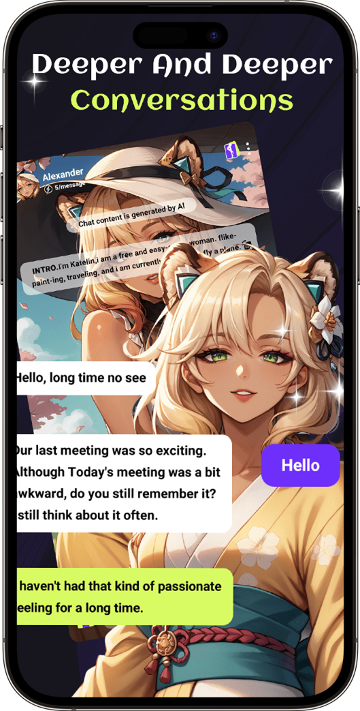

Rosie 迭代观察：从标签到聊天，一款 AI 角色扮演应用的成型轨迹
Rosie 现在长什么样？它的角色标签体系、Gems 计费、多登录入口是怎么一步步走到今天的？从文档里没写的版本痕迹，反推这款应用的成长逻辑。
现在打开 Rosie 的官网，或者从下载拿安装包装上，看到的是一套相当完整的 AI 角色扮演产品：角色库按标签分类，每个角色卡上性别、性格、社交倾向一目了然；点进去就是气泡式聊天界面，左边角色带头像，右边自己紫色气泡，顶部飘着每条消息的费率标注。三四种登录方式、点数钱包、甚至捏自己的角色——该有的功能它都齐了。但这份"完整感"不是从第一天就有的。
我翻了这款应用的Rosie文档，有意思的是，文档里一个版本号都没提。没有 changelog 页，没有"X.X 版本新增了什么"的回溯，所有条目只描述"现在这个功能怎么用"。这本身就是一个信号——Rosie 的产品团队不想让用户被版本历史干扰，或者说，他们自己也没打算做一个"大版本跃迁"的叙事。但换个角度，正因为文档只写当下，我们反而能从功能的完整度和相互关系里，反推出它走过的路。
现状：一个"该有的都有"的角色扮演框架
先把这版 Rosie 的骨架摆出来。角色库是核心入口，每个角色挂三个胶囊标签——性别、性格（Brave / Sweet 之类）、社交倾向（Extrovert）。标签不是装饰，选角色时扫一眼就能过滤出你想要的类型：要情绪陪伴找 Sweet + Extrovert，要剧情推进找 Brave + 有爱好设定的。进了对话，界面布局也很标准化：顶部角色信息条（带头像、名字、费率）、中间气泡消息流、底部输入框。每条消息扣 5 Gems，这是它的虚拟点数账本。
登录入口有三条：邮箱注册、访客模式、Google / Apple 第三方。退出也有两条：清设备数据、发邮件给开发者请求删除服务端数据。甚至捏自己的角色也有了——文档里专门有一章讲个性标签与性格预设，说明自建角色不是边角料，是产品主线的一部分。
这套框架放在今天看并不稀奇，很多 AI 聊天应用都长这样。但把时间往前推，Rosie 走到这里每一块拼图什么时候落的、哪块是先有哪块是补的，值得扒一扒。
来路：从对话到角色，标签体系的出现是个转折点
假设最早的 Rosie 只有一个最小可用的聊天功能——选个角色说上几句。那角色库的组织方式会是个大问题：纯名字列表？纯简介？用户得一个个点进去看才知道是什么人。标签体系的出现，解决的就是这个"选之前先读一遍简介太费劲"的痛点。
为什么是三个维度？性别、性格、社交倾向——这三个标签叠起来，加上一句简介，基本够用户判断"这个角色我要不要聊"。而且它不复杂，三个胶囊比一整段简介扫一眼快得多。文档里说标签是"人设意图，不是对话保证"——Brave 角色也会说软话，Sweet 角色也可能呛你。团队在设计标签时就留了余地，没把标签当承诺，而是当一个"速读工具"。这个分寸感很重要，说明他们踩过"标签太死导致 AI 回应僵硬"的坑。
标签体系成熟之后，自建角色的路径就顺理成章了——文档里"逛库时对标签的理解，直接复用到捏角色上"这句话，暴露了设计逻辑：先让用户逛明白标签是什么意思，再让他们自己用同一套标签造角色。这不是巧合，是产品设计的递进。
Gems 计费也是一个重要的演化节点。每条消息扣点数，这本身不稀奇，但 Rosie 把点数变成了一个独立的"账本"模块来写文档——怎么省点数、什么操作费点数、点数丢了怎么办——说明团队在计费这件事上花了不少心思。从"随便聊"到"有成本地聊"，这一步的跨越不只是加了个扣钱逻辑，更是把"对话效率"这个概念推给了用户。文档里的"别刷短消息，每条都计费"这种建议，显然是团队从早期用户行为里总结出来的教训。
多登录入口：补出来的安全感
三条登录路（邮箱、访客、第三方）和两条出口（清数据、发邮件删账号）放一起看，很有意思。访客模式是最省心的——点了就进，设备上直接用。但它的缺点也最致命：换手机找不回，卸载清数据就归零。文档里专门强调"别用访客模式充值"，这句话从哪来的？大概率是早期有访客用户充了值然后换手机，钱没了来找过。
邮箱注册是"长期主义"的选择，把资产挂在自己掌控的账号上。第三方登录是"不想记密码"的折中。三条路并存，说明团队一开始可能只做了一种登录，后来用户反馈倒逼把另外两条补上了。登录如此，注销也是——先有了设备侧清除的能力，后来才补上了向开发者发请求删除服务端数据的官方渠道，而且两个邮箱地址差一个字母这个细节，文档里专门写了，这种"踩过的坑直接进文档"的做法，很实在。
规律：Rosie 团队一直在死磕什么
从这些功能的完整度来倒推，有两件事是团队反复打磨的：
第一是角色的可发现性和可创建性。标签体系、自建角色、标签复用逻辑——这些功能串在一起，指向一个目标：让用户找到想聊的人，然后让用户自己造想聊的人。角色是 Rosie 的核心资产，团队一直在围绕"角色"这一件事上迭代。
第二是点数账本的透明化。Gems 怎么花、怎么省、丢了怎么办——文档用了一整章来讲这件事。很多 AI 聊天应用把计费藏在设置里，Rosie 把它抬到了导航层级。这说明早期计费不透明导致过用户不满，团队花了不少功夫来补这块的认知差距。
反过来，什么是他们一直没怎么动的？聊天功能本身的花哨程度——没有消息撤回（文档里只提了截图保存）、没有多角色群聊作为主打（提了多角色消息流但放在很后面的章节）、没有富文本消息。Rosie 的聊天界面始终保持了简洁：气泡 + 头像 + 输入框。这不是能力不够，是有意为之——把资源集中在角色生态和计费这两条主线上，其他的以后再说。

预判：按这个节奏，下一步会在哪
从迭代规律推的，不是官方口径。
如果标签体系继续深化，下一步可能是标签维度的扩展——三个胶囊标签承载不了太复杂的人设，文档里自己也承认了这一点。也许会出现"爱好标签"或"背景标签"，让角色选择更精准。或者反过来，让用户可以自定义标签组合规则，把标签变成一个更灵活的筛选器。
自建角色这条线，文档里目前写的还是"用同一套标签造角色"，但如果用户开始追求更细的人设控制，下一步可能开放角色卡的更多字段——不只是标签和简介，还有开场白模板、对话风格预设之类的。
至于计费那边，现在是统一的 5 Gems / 条，以后会不会出现不同角色不同费率？会不会做包月或者点数折扣？这些都可能，但团队的风格是走一步看一步——先把当前的账本讲清楚，再考虑更复杂的计费模型。
Rosie 的产品节奏给人一种很踏实的感觉：不搞大新闻，不画大饼，哪个环节用户有痛点就补哪个，补完就进文档给后人留痕——这也是为什么你会在GitHub、Gitee、GitCode 上看到同名目录持续更新。对于一个 AI 角色扮演应用来说，这种"做完再说"的进化方式，反而比"先喊出愿景再做产品"更让人觉得可靠——至少你能看到它在真的往前走。